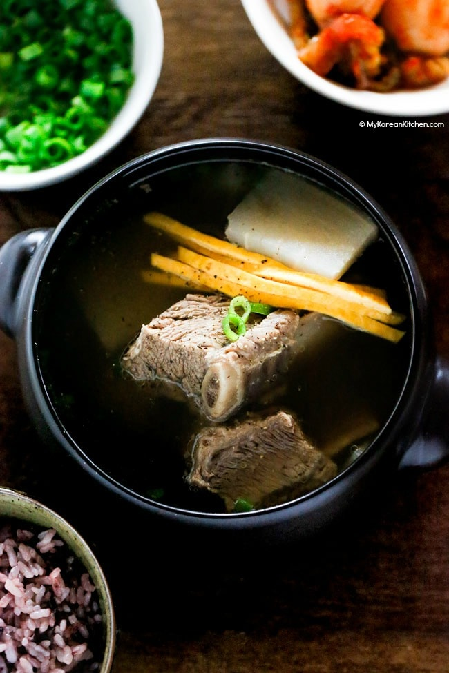

Galbitang

Ingredients
- 1.2 kg – 1.4 kg / 2.6 pounds – 3 pounds beef short ribs, membranes removed
- 1 onion (200g / 7 ounces), cut into large chunks
- 250g / 9 ounces Korean radish (or daikon radish), peeled
- 60g / 2 ounces green onions, white part
- 30g / 1 ounce garlic, peeled
- 10 whole black peppers
- 10 cups water
- 25g / 1 ounce green onions, thinly sliced
- (optional) 70g / 2.5 ounces Korean glass noodles (dangmyeon)
- 1.5 Tbsp Korean soup soy sauce or regular kikkoman soy sauce
- 1 Tbsp minced garlic
- 2 tsp fine sea salt, or more to taste
- ground black peppers, to taste
Steps
- Soak the beef ribs in cold water for 20 mins. Change the water a few times during this time. This is to draw out the red liquid (which looks like blood) from the meat and also to rinse out any bone fragments.
- In a large pot of rolling boiling water (enough to fully cover the ribs), boil the ribs for 6 to 8 minutes over medium high heat. Drain the water and rinse the ribs in cold water. Cut off any obvious excess fat from the ribs.
- Place them in a large clean pot. Add onions, radish, green onions, garlic, black peppers, and water (10 cups) into the pot and bring them to boil over medium high heat, covered. Once rolling boiling, reduce the heat to medium low heat and simmer for 1.5 hours.
- If adding, soak the glass noodles in a large bowl of cold water (fully immersed).
- Gently take out the beef ribs and radish from the broth and set them aside. Strain the remaining ingredients over a large clean pot. Discard all the strained vegetables while keeping the broth. Remove the fat. (Refer to the tips mentioned above.) Thinly slice the radish and place them into the pot.
- Season the beef ribs with the seasoning ingredients and gently place them into the pot. Bring the pot to boil over medium high heat for about 8 mins. Add the glass noodles and green onions and boil for a further 2 mins.
- Serve the soup with cooked rice and other Korean side dishes (ie. radish kimchi and purple rice in the photo). If adding, garnish with julienned eggs (note that I only showed the cooked egg yolks in the photo, not the egg whites).